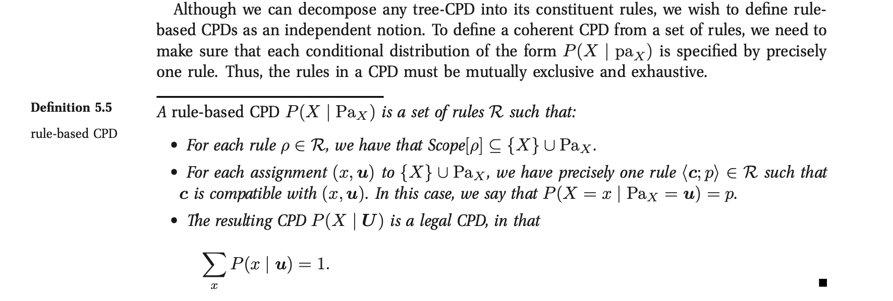

Bayesian Networks
The general outlook.
So recall that in general you have three elements in Bayesian Networks:
- Representation
how do you represent the joint probability of the events as a network (i.e. as a graph data structure)? Can such structure represent the joint in a compact way due to the conditional independence relations?
Note 1: that such compact formulation is one of the key benefits of Bayesian Networks as it really gives the possibility of shrinking the amount of parameters needed to describe the full joint probability leveraging the independence structure among the RVs.
Note 2: this formulation is transparent, i.e. highly understandable also to non-AI experts. It is so to say highly explainable and in this new buzz of explainable AI a solid option.
- Inference
- given some information about some Parent variables, how can I infer/compute the distribution of the children in the Network?
- Learning
- given some observed data, how can I use such information to construct / (infer) / learn the structure of the network?
- given some observed data, how can I learn the parameters of the network? I.e. how can I use the information content of the data to derive some plausible parameterization of the network.
So these are the main tasks you have to deal with in Bayesian Networks. Basically you can do all of the three in a very simple way, which is from a theoretical standpoint very concrete and straightforward or you can start to consider all the aspects of the problem going quickly towards more complex situations.
Representation
As mentioned bayesian networks allow us to express the joint
through less parameters.
The idea is that you factorize the joint as a product of the
conditionals and given the parameterization of the conditionals you
fully specify the joint. Given the independence structures the
number of factorization of conditional terms is limited and the
overall necessary parameters to specify the joint small.
For instance if a Variable D is fully determined by its parents B,
C in this graph:
Then you might well understand that given B, C you do not need
P(D | A, B, C) parameters as P(D | B, C) suffices.
A concrete example is the following:
Notice there that instead of needing 2 (Diff) * 2 (Int) * 3 (Grade) * 2 (Sat) * 2 (Let) = 48 parameters to describe the joint you simply need 2 + 2 + 12 + 6 = 22.
Given this understanding it is immediate to see that Bayesian Networks are defined as above, i.e. as a graph data structure to which local probabilities are applied. In the specific each RV in the graph is associated with conditional probability distributions (CPD) that specify the distribution given each possible joint assignment of values to its parents. And the graph structure together with the CPD specifies the Bayesian Network.
A second representation/ definition of Bayesian Networks is to define it via a global probability P together with the independence relations determined by the graph.
To determine independence relations in graphs you can use standard logic where the argument is essentially the following:
Our intuition tells us that the parents of a variable “shield” it from probabilistic influence that is causal in nature. In other words, once I know the value of the parents, no information relating directly or indirectly to its parents or other ancestors can influence my beliefs about it. However, information about its descendants can change my beliefs about it, via an evidential reasoning process. (Koller and Friedman)
Such that you would have the following local independence structures:
\[ For each variable X_i : (X_i \perp NonDescendants X_i | Parents X_i) \]
Notice that such set of independence is called an I-map for a probability distribution P. You then say that a graph G is an I-map for P if it satisfies the I-map relations specified I(P).
And you would ultimately have the following definition:

So that you basically take here the opposite direction, from a joint distribution P and the local independence structure you have a fully specified Bayesian Network.
Note that you can go from one representation to the other and the BN is defined if and only if you can from one to the other.
On Graph Dependencies and D-separation
Given the above discussion and the fact that it is possible to determine the BN given a joint density and a Graph structure, the question now is on how to extract the conditional independence structures implied by a graph, i.e. to extract the I-map relations.
In order to do that a simple algorithm exists the d-separation algorithm.
The idea here is the following. You know that for three nodes X, Y, Z there exists a dependence structure between X and Y if one of the following conditions hold:

This is quite intuitive.
It follows now that we can quickly assess whether two variables are generally conditionally independent by making reasonings leveraging the active trails as above.
I.e. for two variables to be dependent there must be an active trail as defined by the conditions above.
Notice that for instance in the student BN you can investigate the conditional independence between SAT and Difficulty as follows:
Generally it holds:

You can then find in the book an algorithm for checking d-separation, if interested at any point in time. Notice that there is are also reasonings about completeness and soundness of d-separation. I.e. how well that covers and fully specifies independence structures of P.
I write in here the definition of completeness and soundness should it be of interest at any point at a later stage:
Soundness:
If two nodes X and Y are d-separated given some Z, then we are guaranteed that they are, conditionally independent given Z.
Completeness:
D-separation is complete if it detects all of the possible independencies. I.e. if two variables X and Y are independent given Z, then they are d-separated.
Formally:

On CPD
So far we discussed the possibility of representing the high-dimensional joint distribution into a product of lower-dimensional CPDs or factors, i.e. a product of local probabilities models.
In this section we explore more into the detail the possibility of representing such CPDs.
- Tabular CPD
This is the most basics form of CPD. It works for spaces composed solely of discrete valued RV.
It consists in expressing the \(P(X | PA_X)\) as a table that contains the joint probability of \(X \and PA_X\).
This is essentially what was given in the example above.
Note: it is important to realize that the number of joint probabilities that you have to express is given by
\[|Val(PA_X)| * |Val(X)|\]
I.e. it grows exponentially in the number of parents. This is a serious problem in many settings. You can also not ask an expert to express all such CPDs. He will loose patient at some point.
So the idea is to find a mechanism to express each and every \(P(X | PA_X)\) for each X and \(PA_X\) but without doing the exercise explicitly.
I.e. you should find a functional formula CPD = f(X, PAX) such that you can leverage some structures represented by the functional formula and do not have to express all of the probabilities individually.
You can then read in the book some forms of such deterministic CPDs. The general idea is quite simple. There might be deterministic structures that naturally arise due to the structure of the modeled phenomena.
Moreover for deterministic networks you might have the notion of
context specific independence. Here the idea is that given some particular configuration \(X \cup Y \cup Z\) you might have independence of X and Y given Z in this particular configuration. - Context Specific CPDs for non-deterministic dependecies
Structure in CPDs might not just arise in the case of context-specific CPDs.
The idea is that often there is some structure such that for certain realizations a RV X given some partial assignment to some subset of parents $ U ⊂ PAX$ the probability is fully specified and does not depend on the remaining parents.
Two ways to capture such structure is through Tree-CPDs and rule-based CPDs.
- Tree-CPDs
This is a very intuitive structure for every human. In fact trees are used continuously. There is a natural tendencies for such structures in engineering so nothing new. You saw them 100s time.
However, what is interesting is the example. In fact it is easy to see that by leveraging the tree structure, i.e. the context specific structure and the resulting independencies you can highly reduce the total number of parameters.
To understand that think of the following example:

It is immediate then to see that the above highly reduces the number of parameters.
Notice that when we talk we say that the Tree-CPDs represent the network context specific information. This is immediate to see as you do not in fact consider the full structure of the network, but you already factor out some of the independencies.
To see that consider, the following case where you would have two recommendation letters and are applying for a job. You have to choose among the two. Then you can represent the case in the following ways:
It is clear that on the left you work at the network structure not leveraging context specific information while on (b) you already start to pack that in.
- Rule-based
Another possibility to pack information of the network structure by leveraging context specific information is via
rule-CPDs.They are defined in the following way:
It follows immediately that it basically consists in sets joint co-occurrences of RV and assigns probabilities to such cases.
With it you can then basically express all sorts of CPDs structures that are based on some partitioning.
It is in fact immediate to see that tree-CPDs can be easily expressed via rule-based CPDs but the converse is not true.
- Tree-CPDs
- Independence of Causal Influence
Here the idea is the case where you have a set of variables Xi influencing Y, such that Xi can influence Y in an arbitrary way. I.e. you assume that Xi can interact with each other in complex ways making the effect of each combination unrelated to any other possible combination.
Two such models that fulfill such characteristics are
- the noisy-or model
- the generalized linear models.
- Noisy Or Model
This is a very simple model. If an event occurs then you have no 100% guarantee that the usual reaction will occur. That is there is some noise in the model and some side reaction might happen.
Think for instance at working hard at work. Then with 90% you might have a successful project. However, due to some random factor, say sudden cut of budget or company restructuring, your project might fail. This is the noisy part and the noisy or model.
This is the general setting. It is then possible to express such a noisy model through a graphical representation.
Think of the following:
It follows then that W1 expresses the probability of the noisy factor taking place - i.e. budget restriction. Such that λW = P(W1 | W) = 0.9. Where W = work hard and W1 = normal condition. Notice now, the case where independently on your hard work the team mate hard work also affects the result. Then you could be in a situation as the following

Again also the TW hard work induces a probability of success of 95%, i.e. λ_TW = P(TW1 | TW) = 95%, and there is a 5% prob of failure due to restructuring and budget cut.
This is essentially the Noisy-or model. You have a deterministic or relation influencing the project success - i.e. either your work or your team members work. You have noise, i.e. despite the factors you might have project failures due to some unpredictable conditions - noise. Overall the probability of success is given by products of lambdas. I.e. if both team work and individual work multiply both lambdas. If just one, then take the respective lambda etc.
More formally such model is defined as:
Notice that the leak probability was not discussed that far. It consists of the probability of project success even in the case that no hard work - for neither myself nor the team members was put in the project.
Note that in such a models the parameters would be represented by the estimation of the different lambdas.
- Generalized Linear Models
These are networks where the interaction among the variables is represented by generalized linear models you saw a couple of times in your studies.
Recall that in generalized linear models you would have a linear model
\[ f(X_1, ..., X_p) = \sum_{i}^{p} w_i * X_i \]
That would represent the load that the parents sets on the system. Where the load of each individual variable might be higher or lower and is therefore weighted.
Then basically you would transform such a load into a probability by applying a sensible transformation that could well reflect the system work. I.e. a very wide used example is the S-shaped structure that can be modeled via logit or probit models.
You can also start to make inference on what happens if… cases. For instance in the book it is discussed on how, in the case of a binary model, the log-odd probability changes w.r.t. a change in one of the independent binary RV. This gives you an idea of some possible structures and relations that could occur in such models so that if representative of some real world situation you can leverage on this.
Note that here once the transformation is defined the only parameters left are the weights/loads entering the linear part of the model. You should therefore specify these under this setting.
- Continuous Variables
These are not discussed here. Have to move on. The idea is always the same. You now have some continuous variables, say Y and X. You would then have for instance a relation governed by a normal distribution where \(Y \sim N( \beta * X, \sigma^2)\).
That would actually be the case when
\[ Y = \beta_0 + \sum_{i = 1}^{P} \beta_i X_i + \epsilon \]
where ε is gaussian N(0, σ2). So again the usual stuff.
- Hybrid Models
Here the basic idea is that you have a network where you have a mixture of continuous and discrete variables affecting other variables.
Then one possibility to model such hybrid situation is the following
Notice that such CLG model induces a mixture on the continuous parents Y. Moreover it does not allow to have discrete children. Notice moreover that the number of parameters here is exponential in the number of discrete variables.
Another possibility to model hybrid models is via threshold models, where you would easily go from continuous parents to discrete children.
Notice that these are just very basic possibilities and the idea - both here and in the book I guess - is to start to make you reason about how to model such situations. The possibilities are however uncountable and therefore it is up to you then on a project to spend some time at the beginning to engineer the entire model and decide on the setting.
On Conditional Bayesian Networks
Recall that no matter the CPD definition resulting from the network structure before jumping straight into the modeling of the CPDs for the entire network it might well make sense to consider to reduce the problem.
In some case you might have a general problem that could be split
into submodules. Each submodules would then be generally defined -
say exhaustive - over the entire network if conditioning on some
elements X and upon some output Y it's entire dependency with
the network would be sufficiently specified. All of the other
elements of the sub-module would be encapsulated in between.
An example could be for instance the one of expressing the failures for a PC.
Then you might well start with determining the CPDs for each component given the parents over the entire network. On the other hand you might consider to decompose the problem, leveraging conditional Bayesian Network.
Consider for instance the hard drive. Although the hard drive has a rich internal state, the only aspects of its state that influence objects outside the hard drive are whether it is working properly and whether it is full. The Temperature input of the hard drive in a computer is outside the probabilistic model and will be mapped to the Temperature parent of the Hard-Drive variable in the computer model.
You might then use the following Conditional CPDs to express the system:
More formally than what previously described, albeit a bit clumsy ad definition in my opinion:
TODO Template Based Representations
Skipped and not even read to this stage. Here also temporal dependent models.
TODO Gaussian Network Models
Skipped and not even read to this stage.
TODO Exponential Families
Skipped and not even read to this stage. I guess it is simply the generalization of gaussian Network Models to the different exponential family distributions.
Inference
An important exercise for inference is to query distributions. I.e. as said the task is to compute the probability of the occurrence of some RV given some evidence E, i.e. a subset of RVs that is observed.
So in general the task is to determine:
\[ P (Y | E = e) \]
where Y = query variable and E = evidence.
Given such definition of probability queries it is possible to introduce the first type of query: MAP queries.
\[ MAP (W| e) = \operatorname*{argmax}_w P (w,e)\]
where W = all non-observed RV.
I.e. in MAP queries you are interested in finding the most likely joint assignment of the non-observed variables given the evidence.
If you perform MAP queries for a single RV Y then you are basically computing a probability query for all of the possible realizations y and selecting the most probable one.
Notice that the joint prob. maximizing the likelihood might well differ from the individual RV maximizing realization.
A second type of query is: Marginal MAP Query:
The idea of this is well explained in the book via example.
Imagine you have a class of disease. You want to find the most likely disease given your evidence. Assume that you observe a subset of symptoms E = e. You want to find the MAP assignment of the disease Y.
The issue is now that you have non-observed symptoms: Z.
If you now have a disease that has just a small number of associated symptoms with high probability, and you observe such symptoms, then your MAP query will likely select this realization as most likely.
In reality there might well be a more likely realization - i.e. a different RV that is associated with a lot of symptoms with small probability. The result is that when taking that into account and therefore considering the possible influence of non-observed symptoms the conclusion might be well different.
For this it makes sense to consider marginal MAP that tries in fact to adjust for the presence of the other non-observed RVs influencing the outcome.
\[ marginal MAP (Y | e) = \operatorname*{argmax}_Y \sum_{Z}{P (Y, Z | e)} \]
TODO Exact Inference
TODO Inference as Optimization
TODO Particle Based Approximate Inference
These are essentially the methods you saw in stochastic simulation course.
TODO Map Inference
TODO Inference in Hybrid Models and Temporal Models
Learning
I will do now some brief notes on Learning. This will likely be the matter of my Thesis.
It makes sense therefore to focus now on this, given the little time I have now and as I have to push a bit in order to set things correctly into the pipeline.
Recall that the idea of Learning, is to learn, either (i) the network structure, or (ii) the parameters of the model or (iii) both, from the data.
In some domains, the amount of knowledge required is just too large or the expert’s time is too valuable to ask one to set up and construct all of the network. In others, there are simply no experts who have sufficient understanding of the domain. In many domains, the properties of the distribution change from one application site to another or over time, and we cannot expect an expert to sit and redesign the network every few weeks.
For all of these reasons learning model parameters and structure from the data is particularly important.
Formally, we have a distribution P* that is induced by a network M* = (K*, θ*). Given a dataset D = (d[1], …, d[m]) of M samples of P*. Notice that such data samples are i.i.d. P* distributed. Then given a some model family \(\tilde{M}\) that defines a probability \(P_{\tilde{M}}\) (or \(\tilde{P}\) when \(\tilde{M}\) is clear). I.e. we may want to learn only model parameters for a fixed structure, or some or all of the structure of the model.
Goals of Learning
Notice that we want to construct a \(\tilde{M}\) that precisely represents the distribution P*.
Because of the limited amount of data and the fact that we might possibly have to estimate a very high-dimensional distribution it is clear that in practice we must select an \(\tilde{M}\) that is just a best approximation of M*.
To define what a best approximation is, we have to specify the goals of learning such that we can quantify how well a distribution approximates.
- On a Precise Density Estimation
It is clear that if the goal of setting up a bayesian network is the one of performing inference, then you might want to estimate the density at best such that your inference will be the most precise as possible.
I.e. you try to construct a model \(\tilde{M}\) such that \(\tilde{P}\) is "close" to the generating distribution P*.
In order to measure how close the two densities lie to each other you can use the relative entropy distance:
Notice however that in the above you implicitly assume that P* is known. Obviously this is not the case in many practical cases and it is in fact what we aim to achieve.
A solution for this is the following:

Continuing the sentence in the above, the -Hp term is the negative entropy above and the second is the expected log-likelihood. It is immediate to see that the second term is higher, the higher the probability that \(\tilde{M}\) gives to points, sampled from the true distribution.
As a consequence of that, it holds however that the log-likelihood as a metric for comparing one learned model to another, we cannot evaluate a particular \(\tilde{M}\) in how close it is to the unknown optimum as we have lost in the above the baseline $EP*(ξ)(log (P*(ξ)) - i.e. the first term that we ignore as not depending on \(\tilde{P}\).
Notice moreover that in our discussion we will be interested in the likelihood of the data given the model M - i.e. on \(l(D : M)\). (recall this notation).
Another option for comparing how well a model fits a distribution is through the notion of loss functions \(loss(\xi : M)\). This measures the loss a model \(M\) makes on a particular data sample, i.e. on an instance ξ.
Assume that you take loss function is expressed as the negative log-likelihood, i.e. \(loss(\xi : M) = - \sum^{M}_{m=1}log(P(\xi[m]) : M)\).
Then it holds for the expected loss:
- Specific Prediction Tasks
Notice that when assuming that you want to learn the model to perform probabilistic inference, you implicitly state that your aim is to make conclusions on the overall distribution P*.
I.e. in such a case you are interested in evaluating the probability of a full instance ξ, i.e. the probability of an occurrence/sample over/of the entire network.
In contrast to this setting in many situations we might be interested in answering a whole range of queries of the form P(Y | X).
For instance in a classification task we might be interested in selecting an Y given X. We can then work in such a case with a MAP assignment to Y, i.e.
\[h_{\tilde{P}} = \operatorname*{argmax}_y \tilde{P} (y | x)\]
We might then act similarly for other cases.
We might even use classification errors such as the standard
0/1 loss.Another option is to focus on the general extent to which our learned model is able to predict data generated from the distribution.

Notice that it is immediate to see that if we negate the above we immediately obtain a loss function to compute an empirical estimate by taking the average relative to a data set.
- Knowledge Discovery
This is another possible goal in comparison to probabilistic inference. Here the idea is that you want to understand important properties of the domain by observing P*.
I.e. what are the direct and indirect dependencies, what characterizes the nature of the dependencies and so forth.
Of course, simpler statistical methods can be used to explore the data, for example, by highlighting the most significant correlations between pairs of variables. However, a learned network model can provide parameters that have direct causal interpretation and can also reveal much finer structure, for example, by distinguishing between direct and indirect dependencies, both of which lead to correlations in the resulting distribution.
Notice that such a task requires a very different approach in comparison to the prediction task.
In this setting, we really do care about reconstructing the correct model \(M^*\). While before we could well have distorted reconstructed model \(\tilde{M}\) as long as we would induce a distribution similar to the one induced by \(M^*\).
So in this task we are not interested in some metric stating the difference in the distributions defined by the models but rather as a measure of success we should take directly something representing the distance between \(\tilde{M}\) and \(M^*\).
This is however not always achievable. Even, with a large amounts of data, the true model might not be identifiable. Recall in fact that for instance the
network structureitself \(K^*\), might not be well identifiable due to the I-map discussion of the representation chapter. The best we can achieve in this sense is to recover an I-equivalent structure.Such problems are exacerbated when data is limited. It might be difficult to detect the correlation of two nodes that are in fact related in the true model and distinguish it from some spurious correlation in the data. Note that such a limit is less prominent in a density estimation task. The reasoning is that as if the correlation does not appear in the data than it is likely to be a weak one.
The relatively high probability of making model identification errors can be significant if the goal is to discover the correct structure of the underlying distribution. So here it is important to make some confidence statement about the inferred relationship.
Thus, in a knowledge discovery application, it is far more critical to assess the confidence in a prediction, taking into account the extent to which it can be identified given the available data and the number of hypotheses that would give rise to similar observed behavior. On how to deal with it will be analyzed in the next sections.
- On Learning as an Optimization Task
Notice that in the above sections we defined some numerical criterion to define the extent to which the distributions are comparable to each other.
Given such numerical measures that we wish to mini- or maximize, it follows immediately that learning can be generally seen as an optimization exercise.
We have in fact a hypothesis space, that is a set of candidate models and an objective function that we aim to optimize. So the learning task essentially amounts to find a high-scoring model within our model class.
In the next section we go a bit deeper and analyze the ramifications of choosing one objective function over the other.
- Empirical Risk and Overfitting
As said one of the objective functions we might have is the expected loss.
I.e. we are interested in minimizing \(E_{\xi \sim P^*}[loss(\xi : M)]\).
Notice, that as mentioned before as we do not know the distribution P* we work with the empirical distribution \PD, this is given for an event A as follows:
\[\^{P_D}(A) = \frac{1}{M} \sum_m 1_{\xi{m} \in A} \]
i.e. the empirical distribution is the count of instances that are elements of the event A over all of the instances sampled M. It is therefore the usual frequency.
Notice that as the number of training samples grows the empirical distribution approaches the true distribution. This due to the LLN.
So as you have not have no knowledge about the true P*, you use \PD as your true distribution and compute the empirical loss over it.
However, note that there are important limits in such approach. The dimension of Bayesian Networks distribution increases exponentially in the number of nodes - i.e. especially when nodes have multiple parents.
Consider for instance the following:
Moreover, recall when using the empirical distribution the usual issue of overfitting. I.e. it might be easy to get very high accuracy given a possibly large number of parameters. Notice however that the empirical dist does not have to be 100% representative for the true distribution as discussed above. So recall that.
Recall the standard bias-variance trade off in this sense. We are in the following standard statistical dilemma.

So generally we must take care not to allow a too rich class of possible models.
- Empirical Risk and Overfitting